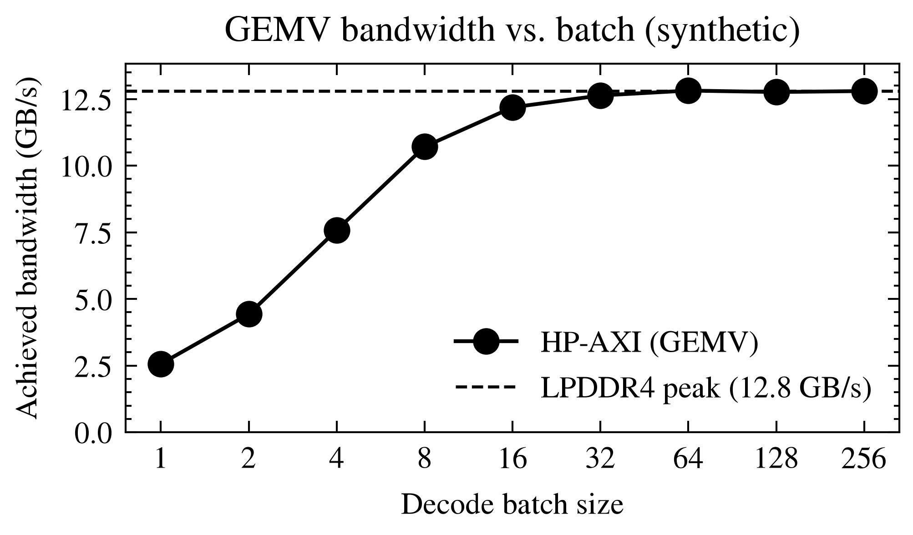

참고
Go to the end to download the full example code.
Batch size vs achieved HP-AXI bandwidth¶
Synthetic illustration of the measured HP-AXI read bandwidth the pccx GEMV core achieves as a function of autoregressive batch size. Numbers are plausibility-scaled for an LPDDR4-3200 KV260 setup (peak ~12.8 GB/s aggregate across HP0-HP3) and are not measurement results — they’re here to exercise the plotting pipeline.

import numpy as np
import matplotlib.pyplot as plt
import scienceplots # noqa: F401 (registers 'science' / 'ieee' styles)
plt.style.use(["science", "ieee", "no-latex"])
rng = np.random.default_rng(seed=42)
# -- Synthetic data ---------------------------------------------------------
batch = np.array([1, 2, 4, 8, 16, 32, 64, 128, 256])
# A simple saturation model: GEMV is weight-bandwidth bound at small batch,
# asymptotically approaching the HP-AXI peak at large batch because weights
# amortize across activations.
peak = 12.8 # GB/s aggregate
k = 0.22
bw_nominal = peak * (1 - np.exp(-k * batch))
bw = bw_nominal + rng.normal(0, 0.12, size=batch.shape)
# -- Figure -----------------------------------------------------------------
fig, ax = plt.subplots(figsize=(3.4, 2.1))
ax.plot(batch, bw, marker="o", label="HP-AXI (GEMV)")
ax.axhline(peak, linestyle="--", linewidth=0.8, label="LPDDR4 peak (12.8 GB/s)")
ax.set_xscale("log", base=2)
ax.set_xticks(batch)
ax.get_xaxis().set_major_formatter(plt.ScalarFormatter())
ax.set_xlabel("Decode batch size")
ax.set_ylabel("Achieved bandwidth (GB/s)")
ax.set_ylim(0, peak * 1.08)
ax.set_title("GEMV bandwidth vs. batch (synthetic)")
ax.legend(loc="lower right", frameon=False)
fig.tight_layout()
plt.show()
Total running time of the script: (0 minutes 0.324 seconds)